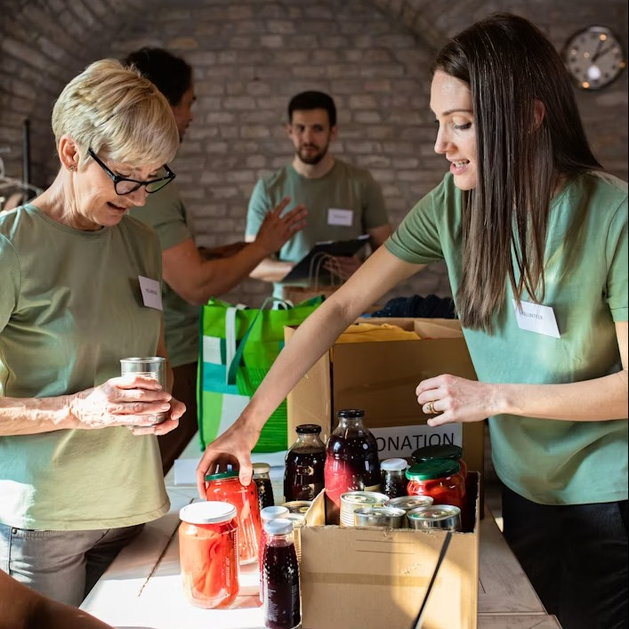
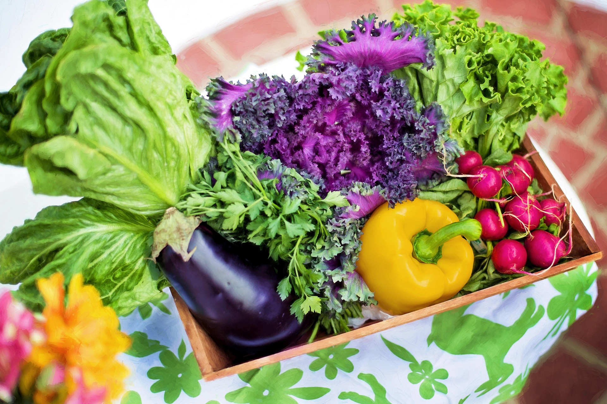

Missão
Garantir acesso a educação, alimento e saúde para famílias em vulnerabilidade.
A Semente do Amanhã leva apoio a famílias da periferia de São Paulo desde 2012. Você pode doar, ser voluntário ou só acompanhar nosso trabalho.
Doar agora Ser voluntário
Garantir acesso a educação, alimento e saúde para famílias em vulnerabilidade.
Uma cidade em que toda comunidade tem as mesmas oportunidades.
Transparência, respeito, solidariedade e compromisso com resultados.
Nascemos de um grupo de moradores que serviam sopa na calçada. Hoje temos sede própria, três projetos e relatórios públicos de tudo que fazemos.
A Semente do Amanhã é uma associação sem fins lucrativos. A assembleia de associados elege a diretoria, que acompanha a coordenação de projetos e os voluntários.
Presidente da diretoria
Coordenador de projetos
Tesoureira e responsável pela transparência


Mais famílias agora colhem os próprios alimentos.
Foram consultas, vacinas e exames gratuitos.
Enviamos um e-mail por mês com notícias, resultados e vagas de voluntariado.